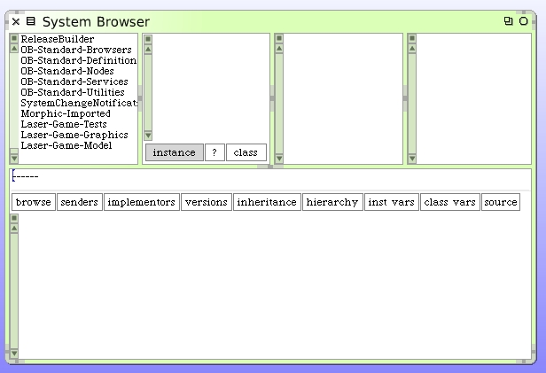
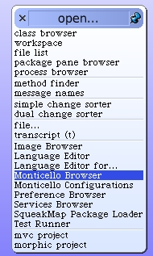
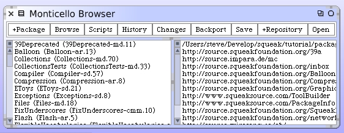
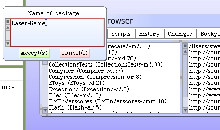
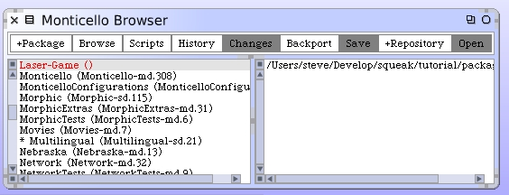
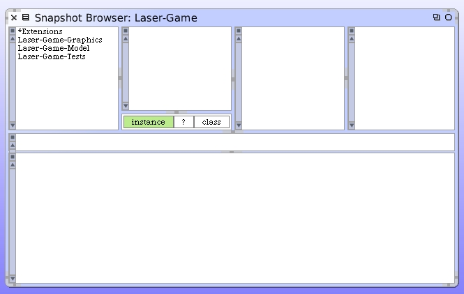
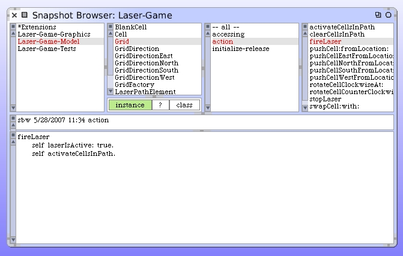
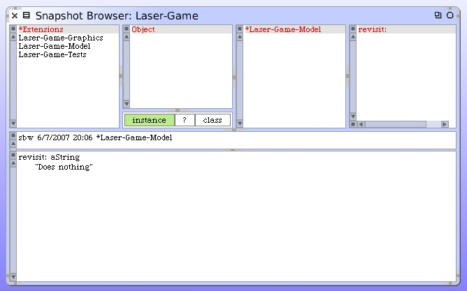

Source Management With Monticello
We've been working on the Laser Game for quite a while. We have 3 general system categories for our code. One is for the model code, another for the graphics, and another for unit tests. I am certain you want to manage the source code that's been written so far in such a way that you know exactly what's included with your project and how to reproduce the code in a very deterministic manner. It's also important that you can version off a level of code that represents a "baseline" in case you want to try some experiments with what's working and need to be able to safely go back if you change your mind about changes.
The most often used tool is called Monticello. It's built right into Squeak 3.9 and provides a simple way to do all of those things. You can save versions of your code in a repository of files. Those files can be shared with other Squeak developers and users.
Before we take the next steps, we will open up our class hierarchy browser again and review how we have the code organized.
The three system categories we used to organize our code are "Laser-Game-Tests", "Laser-Game-Graphics" and "Laser-Game-Model". From the World menu, choose the "Open" menu and navigate to "Monticello Browser".
The Monticello Browser opens up.
We're only going to cover the basic most common uses for Monticello. For our purposes everything will be managed by Monticello in a single "Package". We will call our package "Laser-Game". This name is the beginning portion of the names of the three system categories we are already using. Click on the "+Package" to add the definition for our new package.
Type "Laser-Game" for our new package name and click on "Accept".
To examine the code that is included in the new package, click the "Browse" button. After doing some source analysis, Monticello will open a snapshot browser of everything included in the package "Laser-Game".
You can see our 3 system categories there and a new one named "*Extensions". Click on the "Laser-Game-Model" entry.
You can browse the class definitions, and instance and class methods for the classes included in this system category for our package. What about the "*Extensions" entry? Click on it next.
Remember that instance method we added to the Object class? That's called an extension. We didn't re-define the Object class. We merely added a method to it. We extended it. By using the protocol "*Laser-Game-Model" when we added it, it was automatically included by Monticello for our package.